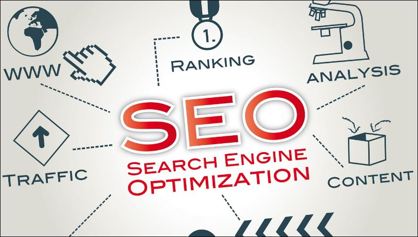
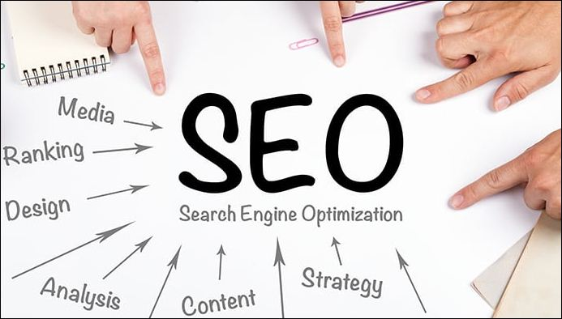
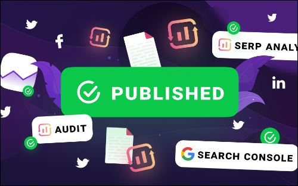

Top 10 SEO Websites to Help Improve Your Search Engine Rankings

Table of Content
- What is search engine optimization (SEO) and how does it work?
- How can I improve my website's search engine rankings?
- What are the best tools and resources for SEO?
- List of 10 websites to Help Improve Search Engine Rankings
- Overall Information For SEO Optimization : Conclusion
Search engine optimization (SEO) is the process of improving the ranking of a website or web page in search engine results pages (SERPs). It is a way of optimizing a website to make it more visible and attractive to search engines, which can help the website rank higher in search results when users search for relevant keywords.
There are a variety of techniques and strategies that can be used to optimize a website for search engines, including on-page optimization (making changes to the content and structure of the website to improve its relevance and quality), off-page optimization (building high-quality backlinks from other websites to improve the website's authority and trustworthiness), and technical SEO (optimizing the website's technical elements, such as its loading speed and mobile-friendliness).
SEO can be an important part of a company's online marketing strategy, as it can help to increase the visibility and reach of a website and attract more qualified traffic to the website. The goal of SEO is to improve the website's ranking in search results and drive more organic (non-paid) traffic to the website.
SEO Optimization
SEO optimization refers to the process of improving a website's ranking in search engine results pages (SERPs) through a variety of techniques and strategies. This can involve making changes to the content and structure of the website, building high-quality backlinks from other websites, and optimizing the website's technical elements.
There are many different factors that can impact a website's search engine rankings, and SEO optimization aims to address as many of these factors as possible in order to improve the website's visibility and attract more qualified traffic. Some common strategies used in SEO optimization include keyword research and optimization, creating high-quality, informative content, optimizing website metadata (such as titles and descriptions), and improving website structure and navigation.
SEO optimization can be a complex and ongoing process, as search engine algorithms are constantly evolving and the competition for higher rankings is fierce. However, by following best practices and staying up-to-date on the latest industry trends, it is possible to improve a website's search engine rankings and drive more organic (non-paid) traffic to the website.
Here are 8 ways to optimize a website for search engines:
- Perform keyword research: Identify relevant and high-volume keywords that you want to target in your website's content and meta tags.
- Optimize website metadata: Use your identified keywords in the title tags, meta descriptions, and headings of your website's pages to signal to search engines what the page is about.
- Create high-quality, informative content: Provide value to your website's visitors by creating useful, informative, and engaging content that addresses their needs and interests.
- Use header tags correctly: Use headings (H1, H2, etc.) to structure your content and make it easier for search engines to understand the hierarchy and importance of your content.
- Optimize images: Use descriptive, keyword-rich file names for images and include alt text to describe the image and its content.
- Improve website speed and mobile-friendliness: Make sure your website loads quickly and is easy to use on mobile devices, as these are important ranking factors for search engines.
Optimizing Your Website for Search Engines: A Comprehensive Approach

Search engine optimization (SEO) is a digital marketing strategy that aims to improve a website's ranking in search engine results pages (SERPs) and increase its visibility to potential customers. By optimizing the website's content, structure, and off-page factors such as backlinks and technical elements, businesses can attract more qualified traffic to their website and improve their online presence.
Effective SEO requires a data-driven and comprehensive approach, utilizing a variety of tactics such as keyword research and optimization, on-page optimization, off-page optimization, and technical SEO to improve the website's visibility and ranking in search results. By following best practices and staying up-to-date on the latest industry trends, businesses can improve their search engine rankings and drive more organic (non-paid) traffic to their website, ultimately leading to increased conversions and revenue.
List of 10 websites that can provide helpful information and resources for search engine optimization (SEO):
- Moz: This is a leading authority on SEO. This website provides a variety of tools and resources to help improve your website's search engine rankings, including a keyword research tool, site audit tool, and link analysis tool. It also offers educational resources such as blog articles and webinars on SEO best practices.
- Search Engine Land: This website provides news and information about search engine algorithms and best practices for SEO. It also offers a variety of tools and resources, such as guides and tips for improving your website's search engine rankings.
- Neil Patel: Neil Patel's website provides a variety of resources and tools to help you improve your SEO, including a keyword research tool, content marketing tool, and website audit tool. It also offers educational resources such as blog articles and courses on SEO.
- Search Engine Journal: This website covers the latest SEO news, tips, and strategies to help you improve your search engine rankings. It also offers a variety of resources, such as guides, case studies, and webinars on SEO-related topics.
- Ahrefs: This is a comprehensive SEO tool that helps you track your website's performance and identify opportunities for improvement. It offers a variety of features, including keyword research, backlink analysis, and website audit tools.
- SEMrush: This is another comprehensive SEO tool that helps you track your website's performance, identify opportunities for improvement, and perform competitor analysis. It offers a variety of features, including keyword research, backlink analysis, and website audit tools.
- Backlinko: This website is focused on helping you build high-quality backlinks, which are an important factor in search engine rankings. It offers a variety of resources, such as guides and tips, on building and acquiring backlinks.
- Yoast SEO: This is a popular WordPress plugin that helps you optimize your website's content for search engines. It offers a variety of features, such as keyword optimization, readability checks, and meta tags optimization.
- Google Webmaster Central: This is Google's official resource for webmasters, and it provides a variety of tools and resources to help you improve your website's SEO. These include tools for tracking your website's performance, identifying technical issues, and submitting your website's sitemap to Google.
- HubSpot: This website provides a variety of marketing resources, including information on SEO best practices and tools to help you improve your website's search engine rankings. It offers a range of features, such as keyword research, content optimization, and website audit tools.
Benefits of Search Engine Optimization (SEO) for bloggers
As a blogger, implementing search engine optimization (SEO) strategies can have numerous benefits for your website and its success. By optimizing your blog for relevant keywords and following best practices for SEO, you can increase your website's visibility and reach, attracting more qualified traffic and potentially increasing your revenue through monetization strategies such as advertising and sponsorships.
Additionally, by following SEO best practices, you can improve the credibility and trustworthiness of your blog in the eyes of search engines and your readers, establishing it as a reliable and authoritative source of information in its niche. Finally, optimizing your blog for search engines can also improve the user experience for your readers, making it easier for them to find and engage with your content. Overall, SEO can be a powerful tool for bloggers to increase their online presence, drive qualified traffic to their website, and achieve their business goals.

Conclusion
The websites mentioned earlier are all dedicated to providing information and resources related to search engine optimization (SEO). These websites offer a variety of tools and features to help businesses and individuals improve their website's search engine rankings and drive more qualified traffic to their websites.
Some of these websites, such as Moz and Ahrefs, offer a range of SEO tools and features that can help businesses track their website's performance, identify opportunities for improvement, and perform competitor analysis. Other websites, such as Neil Patel and HubSpot, provide educational resources and guides on SEO best practices and strategies to help businesses improve their search engine rankings. Some websites, such as Search Engine Land and Search Engine Journal, focus on providing news and information about search engine algorithms and the latest SEO trends. Overall, these websites offer a wealth of information and resources to help businesses and individuals succeed in their online marketing efforts through effective SEO.